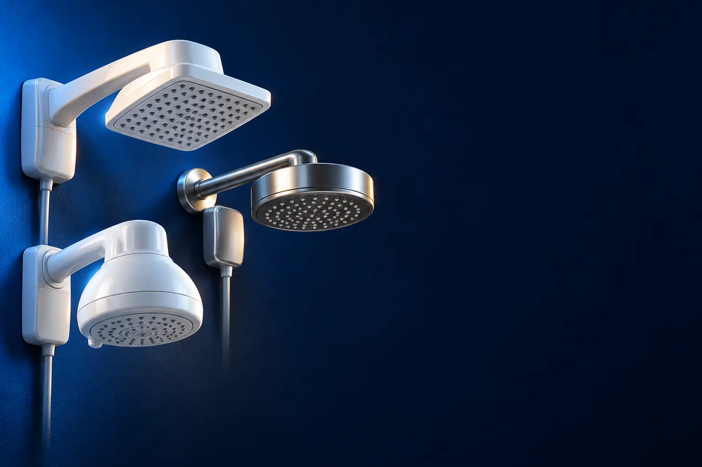

220 V
Melhor chuveiro elétrico 220 V custo-benefício
A maioria das casas do Sul e de parte do Sudeste. Mais potência, banho mais quente no inverno.

Melhor custo-benefício em 220 VLorenzetti Bella Ducha Ultra 4T 220 V
CURADORIA TECHAPROVADO · 2026
A voltagem da sua casa e a pressão da água decidem o chuveiro antes da marca. Separamos 17 modelos em 3 perfis, do custo-benefício ao top de linha, e dizemos para quem cada um vale a pena.

NOSSA LEITURA
Chuveiro de 220 V não funciona em 127 V, e vice-versa. Confira a voltagem do banheiro (no quadro de luz ou no chuveiro atual) e a pressão da água antes de escolher o modelo.
COMECE POR AQUI
220 V
A maioria das casas do Sul e de parte do Sudeste. Mais potência, banho mais quente no inverno.
127 V (110 V)
Para casas com rede de 127 V. Potência menor, então o modelo certo faz mais diferença.

COM PRESSURIZADOR (TURBO)
Caixa d'água baixa ou apartamento no último andar? O pressurizador aumenta a água que sai.

A FICHA, TRADUZIDA
01 - VOLTAGEM E POTÊNCIA
A potência, em watts (W), diz quanto o chuveiro consegue esquentar a água. Na rede de 127 V (que muita gente chama de 110 V), os chuveiros ficam em torno de 5.500 W. Na de 220 V, chegam a 6.800, 7.500 e 7.800 W.
Por isso, no inverno, o 220 V esquenta mais. No 127 V, um chuveiro com bom comando de temperatura e espalhador menor ajuda a manter o banho quente.
Nunca instale chuveiro de voltagem diferente da rede. E quanto maior a potência, mais grossa precisa ser a fiação e maior o disjuntor: confira no manual.
02 - TEMPERATURAS
Os chuveiros mais simples têm 3 ou 4 temperaturas fixas, escolhidas num seletor. Os de comando multitemperaturas ou eletrônico deixam você girar e ajustar o calor aos poucos.
O ajuste fino é mais confortável e economiza energia, porque você usa só o calor necessário. Faz mais diferença no 127 V e nas estações de meio-termo.
O comando eletrônico costuma ter uma haste ou botão: escolha um que fique em lugar fácil de alcançar com a mão molhada.
03 - PRESSÃO DA ÁGUA
O volume de água que sai depende da altura da caixa d'água em relação ao chuveiro. Em casa térrea com caixa baixa ou no último andar do prédio, o banho costuma ser fraco.
Os chuveiros turbo têm um pressurizador (uma pequena bomba) embutido, que aumenta a pressão e o volume. As duchas com tecnologia Press Plus melhoram o jato sem bomba.
O pressurizador funciona só com água da caixa: não ligue em água direto da rua. E mais água passando significa banho um pouco menos quente.
04 - RESISTÊNCIA
A resistência é o fio que esquenta a água e é a peça que mais queima. Os modelos de resistência refil ou em cartucho trocam em minutos, sem desmontar o chuveiro.
Antes de comprar, veja se a resistência de reposição é fácil de achar. As da Lorenzetti estão em quase toda loja de material de construção.
Resistência queima mais quando o chuveiro é ligado com pouca água ou na posição mais quente o tempo todo. Abra a água antes de ligar o calor.
A CURADORIA EM DETALHE
17 modelos da pesquisa
PERFIL · 6 MODELOS, DA ENTRADA AO TOP DE LINHA
Para casas com rede de 220 V, que permitem potências maiores (6.800 a 7.800 W) e banho mais quente no inverno. A escada vai do chuveiro de 4 temperaturas ao de comando eletrônico, que ajusta a água grau a grau, e às duchas grandes de jato forte.

220 V · ENTRADA 1 de 6
6.800 W · 4 temperaturas · com cano
Ver preço na AmazonPOR DENTRO DA ESCOLHA
Chuveiro de 6.800 W com 4 temperaturas, seletor com isolação e o que a Fame descreve como o maior volume de água da categoria. Vem com cano de 30 cm.
Faz o básico com potência alta. As 4 temperaturas ajudam a economizar no verão.
| Potência | 6.800 W |
|---|---|
| Temperaturas | 4 |
| Voltagem | 220 V |
| Cano | 30 cm incluído |
Fonte: ficha e descrição do anúncio, conferidas em 02/11/2026. Dados informados pelo fabricante. Nota e número de avaliações são de compradores, não teste do TechAprovado.
220 V · CUSTO-BENEFÍCIO 2 de 6
Melhor custo-benefício em 220 V
6.800 W · 4 temperaturas · refil de troca rápida
Ver preço na AmazonPOR DENTRO DA ESCOLHA
A ducha da Lorenzetti mais vendida da seleção: 6.800 W, 4 temperaturas, espalhador grande e resistência tipo refil, que se troca em minutos sem ferramenta especial.
A resistência refil da Lorenzetti é vendida em qualquer loja de material de construção. Mais de 3,4 mil avaliações, nota 4,6.
| Potência | 6.800 W |
|---|---|
| Temperaturas | 4 |
| Resistência | Refil, troca rápida |
| Voltagem | 220 V |
Fonte: ficha e descrição do anúncio, conferidas em 02/11/2026. Dados informados pelo fabricante. Nota e número de avaliações são de compradores, não teste do TechAprovado.

220 V · INTERMEDIÁRIO 3 de 6
Eletrônico · espalhador slim · resistência Loren Ultra
Ver preço na AmazonPOR DENTRO DA ESCOLHA
Comando eletrônico: em vez de 4 posições, você gira e escolhe a temperatura aos poucos. Tem 7.500 W, espalhador slim quadrado e resistência Loren Ultra, de longa duração.
O comando eletrônico economiza energia porque você usa só o calor necessário. Mais de 13 mil avaliações, nota 4,6.
| Potência | 7.500 W |
|---|---|
| Comando | Eletrônico |
| Resistência | Loren Ultra |
| Voltagem | 220 V |
Fonte: ficha e descrição do anúncio, conferidas em 02/11/2026. Dados informados pelo fabricante. Nota e número de avaliações são de compradores, não teste do TechAprovado.

220 V · AVANÇADO 4 de 6
Comando eletrônico · ducha grande · refil
Ver preço na AmazonPOR DENTRO DA ESCOLHA
Ducha de espalhador grande com comando eletrônico gradual e preciso, 7.500 W e resistência refil.
O degrau sobre a Loren Shower é o desenho da ducha, maior. Mais de 3,4 mil avaliações, nota 4,6.
| Potência | 7.500 W |
|---|---|
| Comando | Eletrônico |
| Resistência | Refil |
| Voltagem | 220 V |
Fonte: ficha e descrição do anúncio, conferidas em 02/11/2026. Dados informados pelo fabricante. Nota e número de avaliações são de compradores, não teste do TechAprovado.

220 V · AVANÇADO 5 de 6
Press Plus · haste de controle · 7.800 W
Ver preço na AmazonPOR DENTRO DA ESCOLHA
Tecnologia Press Plus, que dá jato forte mesmo com pouca pressão, 7.800 W, comando eletrônico com haste de controle e resistência Loren Ultra em cartucho de troca rápida.
O Press Plus é o meio-termo entre o chuveiro comum e o turbo: melhora o jato sem bomba. Mais de 4,6 mil avaliações.
| Potência | 7.800 W |
|---|---|
| Jato | Press Plus |
| Comando | Eletrônico, com haste |
| Resistência | Loren Ultra, cartucho |
| Voltagem | 220 V |
Fonte: ficha e descrição do anúncio, conferidas em 02/11/2026. Dados informados pelo fabricante. Nota e número de avaliações são de compradores, não teste do TechAprovado.

220 V · TOP DE LINHA 6 de 6
Top de linha em 220 V
Ducha grande · Press Plus · Loren Ultra
Ver preço na AmazonPOR DENTRO DA ESCOLHA
A ducha grande e potente da Lorenzetti: 7.800 W, Press Plus para jato forte com pouca pressão e resistência Loren Ultra em cartucho de troca rápida. Acabamento preto e cromado.
É a ducha elétrica mais desejada do país, com mais de 13 mil avaliações. O preço é de acabamento e tamanho de espalhador.
| Potência | 7.800 W |
|---|---|
| Jato | Press Plus |
| Resistência | Loren Ultra, cartucho |
| Acabamento | Preto e cromado |
| Voltagem | 220 V |
Fonte: ficha e descrição do anúncio, conferidas em 02/11/2026. Dados informados pelo fabricante. Nota e número de avaliações são de compradores, não teste do TechAprovado.
PERFIL · 6 MODELOS, DA ENTRADA AO TOP DE LINHA
Em casas com rede de 127 V (chamada de 110 V), a potência fica em torno de 5.500 W, então o desenho do chuveiro e a resistência fazem mais diferença no conforto. A escada vai do básico de 3 temperaturas às duchas com Press Plus.

127 V · ENTRADA 1 de 6
5.500 W · 3 temperaturas · compatível com solar
Ver preço na AmazonPOR DENTRO DA ESCOLHA
O básico de 127 V: 5.500 W, 3 temperaturas e espalhador grande. É compatível com aquecedor solar.
Faz o essencial com a marca mais fácil de achar resistência. Quase 2 mil avaliações, nota 4,6.
| Potência | 5.500 W |
|---|---|
| Temperaturas | 3 |
| Solar | Compatível |
| Voltagem | 127 V |
Fonte: ficha e descrição do anúncio, conferidas em 02/11/2026. Dados informados pelo fabricante. Nota e número de avaliações são de compradores, não teste do TechAprovado.
127 V · CUSTO-BENEFÍCIO 2 de 6
Melhor custo-benefício em 127 V
Multitemperaturas · slim · Loren Ultra
Ver preço na AmazonPOR DENTRO DA ESCOLHA
Comando multitemperaturas para escolher o calor aos poucos, espalhador slim quadrado e resistência Loren Ultra, de longa duração.
No 127 V, ajustar a temperatura com precisão faz mais diferença, porque a potência é menor.
| Potência | 5.500 W |
|---|---|
| Comando | Multitemperaturas |
| Resistência | Loren Ultra |
| Voltagem | 127 V |
Fonte: ficha e descrição do anúncio, conferidas em 02/11/2026. Dados informados pelo fabricante. Nota e número de avaliações são de compradores, não teste do TechAprovado.

127 V · ALTERNATIVA 3 de 6
Outro caminho: ducha de parede
Ducha de parede, sem cano · multitemperaturas
Ver preço na AmazonPOR DENTRO DA ESCOLHA
Ducha de parede, que dispensa o cano: instala direto no ponto de água. Comando multitemperaturas e compatível com dispositivo DR (diferencial residual).
Não é um degrau acima da Loren Shower, é outro formato. Mais de 4,9 mil avaliações, nota 4,7.
| Potência | 5.500 W |
|---|---|
| Formato | Ducha de parede, sem cano |
| Comando | Multitemperaturas |
| Voltagem | 127 V |
Fonte: ficha e descrição do anúncio, conferidas em 02/11/2026. Dados informados pelo fabricante. Nota e número de avaliações são de compradores, não teste do TechAprovado.

127 V · INTERMEDIÁRIO 4 de 6
Comando eletrônico · encaixe fácil na parede
Ver preço na AmazonPOR DENTRO DA ESCOLHA
Ducha eletrônica com o sistema "engate fácil": você enrosca o engate na parede, encaixa a ducha e gira. O espalhador foi desenhado para banho confortável.
O engate fácil é o diferencial. Mais de 500 avaliações, nota 4,5.
| Potência | 5.500 W |
|---|---|
| Comando | Eletrônico |
| Instalação | Engate fácil |
| Voltagem | 127 V |
Fonte: ficha e descrição do anúncio, conferidas em 02/11/2026. Dados informados pelo fabricante. Nota e número de avaliações são de compradores, não teste do TechAprovado.

127 V · AVANÇADO 5 de 6
Press Plus · Loren Ultra · cartucho
Ver preço na AmazonPOR DENTRO DA ESCOLHA
Press Plus para jato forte com pouca pressão e resistência Loren Ultra em cartucho de troca rápida, na versão de 127 V.
Leva o Press Plus para o 127 V, onde a potência menor pede um jato bem distribuído.
| Potência | 5.500 W |
|---|---|
| Jato | Press Plus |
| Resistência | Loren Ultra, cartucho |
| Voltagem | 127 V |
Fonte: ficha e descrição do anúncio, conferidas em 02/11/2026. Dados informados pelo fabricante. Nota e número de avaliações são de compradores, não teste do TechAprovado.

127 V · TOP DE LINHA 6 de 6
Top de linha em 127 V
Ducha grande · Press Plus · 5.500 W
Ver preço na AmazonPOR DENTRO DA ESCOLHA
A Acqua Duo em 127 V: ducha grande, Press Plus e resistência Loren Ultra em cartucho de troca rápida.
É a ducha mais completa em 127 V. Mais de 1,7 mil avaliações, nota 4,5.
| Potência | 5.500 W |
|---|---|
| Jato | Press Plus |
| Resistência | Loren Ultra, cartucho |
| Voltagem | 127 V |
Fonte: ficha e descrição do anúncio, conferidas em 02/11/2026. Dados informados pelo fabricante. Nota e número de avaliações são de compradores, não teste do TechAprovado.
PERFIL · 5 MODELOS, DA ENTRADA AO TOP DE LINHA
Os chuveiros turbo têm uma pequena bomba (pressurizador) embutida que aumenta a pressão e o volume da água. Resolvem o problema de quem mora em casa com caixa d'água baixa ou no último andar. Funcionam só com água da caixa, não da rua.
TURBO · CUSTO-BENEFÍCIO 1 de 5
Melhor custo-benefício com pressurizador
Pressurizador embutido · 4 temperaturas
Ver preço na AmazonPOR DENTRO DA ESCOLHA
Pressurizador embutido que aumenta a pressão e o volume da água, com comando de 4 temperaturas e resistência refil. Versão 127 V.
O turbo resolve o banho fraco sem instalar um pressurizador separado. Mais de 1,2 mil avaliações, nota 4,4.
| Potência | 5.500 W |
|---|---|
| Pressurizador | Embutido |
| Temperaturas | 4 |
| Voltagem | 127 V |
Fonte: ficha e descrição do anúncio, conferidas em 02/11/2026. Dados informados pelo fabricante. Nota e número de avaliações são de compradores, não teste do TechAprovado.

TURBO · INTERMEDIÁRIO 2 de 5
Pressurizador embutido · 6.800 W · 4 temperaturas
Ver preço na AmazonPOR DENTRO DA ESCOLHA
A Bella Ducha com pressurizador embutido: mais pressão e volume de água, 6.800 W, 4 temperaturas e resistência refil.
É a Bella Ducha que já conhecemos, com bomba. Mais de 700 avaliações, nota 4,6.
| Potência | 6.800 W |
|---|---|
| Pressurizador | Embutido |
| Temperaturas | 4 |
| Voltagem | 220 V |
Fonte: ficha e descrição do anúncio, conferidas em 02/11/2026. Dados informados pelo fabricante. Nota e número de avaliações são de compradores, não teste do TechAprovado.

TURBO · INTERMEDIÁRIO 3 de 5
Pressurizador · multitemperaturas · 6.400 W
Ver preço na AmazonPOR DENTRO DA ESCOLHA
Ducha grande com pressurizador embutido e comando multitemperaturas de 4 posições, 6.400 W e resistência refil.
O espalhador maior distribui melhor a água extra que o pressurizador entrega.
| Potência | 6.400 W |
|---|---|
| Pressurizador | Embutido |
| Comando | Multitemperaturas, 4 posições |
| Voltagem | 220 V |
Fonte: ficha e descrição do anúncio, conferidas em 02/11/2026. Dados informados pelo fabricante. Nota e número de avaliações são de compradores, não teste do TechAprovado.

TURBO · AVANÇADO 4 de 5
Turbo opcional num botão · multitemperaturas
Ver preço na AmazonPOR DENTRO DA ESCOLHA
Pressurizador com botão para ligar e desligar o turbo quando quiser, 7.500 W e comando de 4 temperaturas.
O botão de turbo dá controle sobre o consumo de água e energia.
| Potência | 7.500 W |
|---|---|
| Pressurizador | Com botão liga/desliga |
| Temperaturas | 4 |
| Voltagem | 220 V |
Fonte: ficha e descrição do anúncio, conferidas em 02/11/2026. Dados informados pelo fabricante. Nota e número de avaliações são de compradores, não teste do TechAprovado.

TURBO · TOP DE LINHA 5 de 5
Top de linha com pressurizador
Ducha manual · jato multidirecional · 8 temperaturas
Ver preço na AmazonPOR DENTRO DA ESCOLHA
O turbo mais completo: 7.800 W, ducha principal e ducha manual com jato multidirecional, e 4 temperaturas com o turbo ligado e 4 sem ele.
A ducha manual é útil para lavar o box e dar banho em criança ou pet.
| Potência | 7.800 W |
|---|---|
| Pressurizador | Embutido |
| Ducha manual | Sim, multidirecional |
| Temperaturas | 4 com turbo + 4 sem |
| Voltagem | 220 V |
Fonte: ficha e descrição do anúncio, conferidas em 02/11/2026. Dados informados pelo fabricante. Nota e número de avaliações são de compradores, não teste do TechAprovado.
Nenhum modelo encontrado. Tente outro termo ou volte para Todos.
LADO A LADO
| Modelo | Perfil | Posição | Potência | Destaque | Nota (avaliações) |
|---|---|---|---|---|---|
| Fame Ducha Faminho 4T 220 V | 220 V | Entrada | 6.800 W | 6.800 W · 4 temperaturas · com cano | 4,6 (576) |
| Lorenzetti Bella Ducha Ultra 4T 220 V | 220 V | Custo-benefício | 6.800 W | 6.800 W · 4 temperaturas · refil de troca rápida | 4,6 (3,4 mil) |
| Lorenzetti Loren Shower Eletrônico 7.500 W | 220 V | Intermediário | 7.500 W | Eletrônico · espalhador slim · resistência Loren Ultra | 4,6 (13,1 mil) |
| Lorenzetti Ducha Advanced Eletrônica 7.500 W | 220 V | Avançado | 7.500 W | Comando eletrônico · ducha grande · refil | 4,6 (3,5 mil) |
| Lorenzetti Acqua Storm Ultra 7.800 W | 220 V | Avançado | 7.800 W | Press Plus · haste de controle · 7.800 W | 4,6 (4,6 mil) |
| Lorenzetti Acqua Duo 7.800 W | 220 V | Top de linha | 7.800 W | Ducha grande · Press Plus · Loren Ultra | 4,6 (13,6 mil) |
| Lorenzetti Maxi Ducha 127 V | 127 V | Entrada | 5.500 W | 5.500 W · 3 temperaturas · compatível com solar | 4,6 (1,9 mil) |
| Lorenzetti Loren Shower Multitemperaturas 127 V | 127 V | Custo-benefício | 5.500 W | Multitemperaturas · slim · Loren Ultra | 4,6 (742) |
| Lorenzetti Ducha Futura Multitemperaturas 127 V | 127 V | Alternativa | 5.500 W | Ducha de parede, sem cano · multitemperaturas | 4,7 (4,9 mil) |
| Hydra Ducha Eletrônica 127 V | 127 V | Intermediário | 5.500 W | Comando eletrônico · encaixe fácil na parede | 4,5 (526) |
| Lorenzetti Acqua Storm Ultra 127 V | 127 V | Avançado | 5.500 W | Press Plus · Loren Ultra · cartucho | 4,5 (355) |
| Lorenzetti Acqua Duo 127 V | 127 V | Top de linha | 5.500 W | Ducha grande · Press Plus · 5.500 W | 4,5 (1,7 mil) |
| Lorenzetti Advanced Turbo 127 V | Turbo | Custo-benefício | 5.500 W | Pressurizador embutido · 4 temperaturas | 4,4 (1,2 mil) |
| Lorenzetti Bella Ducha Turbo 4T 220 V | Turbo | Intermediário | 6.800 W | Pressurizador embutido · 6.800 W · 4 temperaturas | 4,6 (721) |
| Lorenzetti Advanced Turbo 220 V | Turbo | Intermediário | 6.400 W | Pressurizador · multitemperaturas · 6.400 W | 4,5 (1,6 mil) |
| Lorenzetti Top Jet Turbo 7.500 W | Turbo | Avançado | 7.500 W | Turbo opcional num botão · multitemperaturas | 4,4 (1,4 mil) |
| Lorenzetti Jet Turbo 7.800 W | Turbo | Top de linha | 7.800 W | Ducha manual · jato multidirecional · 8 temperaturas | 4,4 (983) |
CONSIDERAÇÕES FINAIS
Comando eletrônico e 7.500 W, com mais de 13 mil avaliações.
Os tops de linha (Acqua Duo e Jet Turbo) fazem sentido para banheiro novo, com fiação preparada para a potência alta. Para trocar um chuveiro antigo, os custo-benefício resolvem.
Em 220 V, a Lorenzetti Bella Ducha Ultra 4T. Em 127 V, a Loren Shower Multitemperaturas. Para pouca pressão, a Lorenzetti Advanced Turbo.
O 220 V, porque permite potências maiores. Mas você precisa usar o da voltagem da sua rede.
Pode gastar, porque você ajusta só o calor necessário em vez de usar a posição mais quente.
Funciona com água vinda da caixa d'água. Não deve ser ligado em água direto da rua.
Porque ele muda várias vezes por dia. Usamos o preço só para montar a escada de cada perfil; o botão leva ao valor atualizado na loja.
TRANSPARÊNCIA EDITORIAL
Separamos os perfis pelo que decide a compra: voltagem (220 V ou 127 V) e pressão da água. Cada modelo precisa responder com clareza "para quem ele é o certo".
Em cada perfil há modelos em faixas de preço diferentes, e cada degrau precisa entregar algo que o anterior não entrega. Dois modelos com a mesma proposta não entram juntos.
Ficha, nota e número de avaliações foram conferidos nos anúncios das lojas em 02/11/2026. As avaliações são de compradores, não teste nosso.
Os links de compra desta página são de afiliado: se você comprar por eles, o TechAprovado pode ganhar uma comissão, sem custo adicional para você. Isso não muda a ordem nem a escolha dos produtos.
📲 GUIAS E DICAS NO SEU FEED
Dicas práticas antes de comprar, em carrosséis e vídeos curtos, sempre com link para o guia completo.